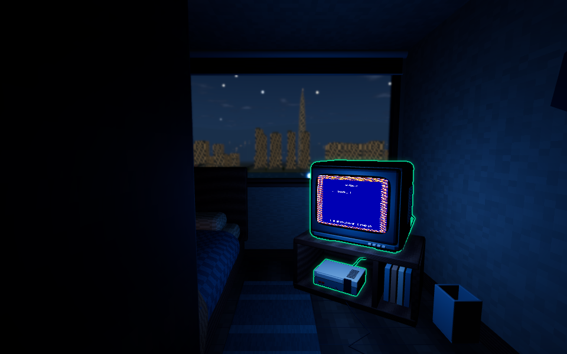
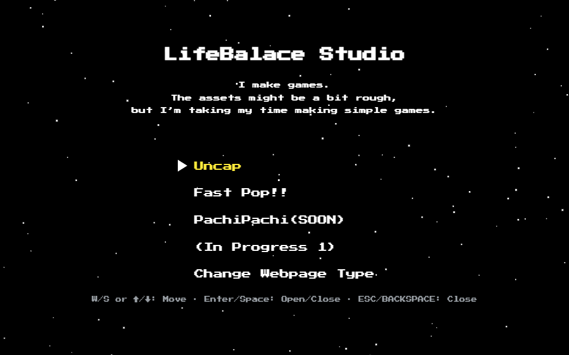

게임을 만드는 작은 공간
작은 게임,
작은 방.
작고 간단한 게임을 천천히 만들고 있습니다.
방을 둘러보거나, 만든 게임들을 바로 만나보세요.

공간에서 만나기
방 둘러보기
창밖의 서울과 작은 게임기.
TV 앞에서 게임 이야기를 펼쳐보세요.

게임부터 만나기
게임 포트폴리오
만든 게임과 짧은 소개를
기존 홈페이지에서 바로 확인하세요.
LifeBalance Studio
게임을 만들고, 그 안에 작은 경험을 담습니다.
Uncap, Fast Pop!! 그리고 다음 게임들을 소개합니다.